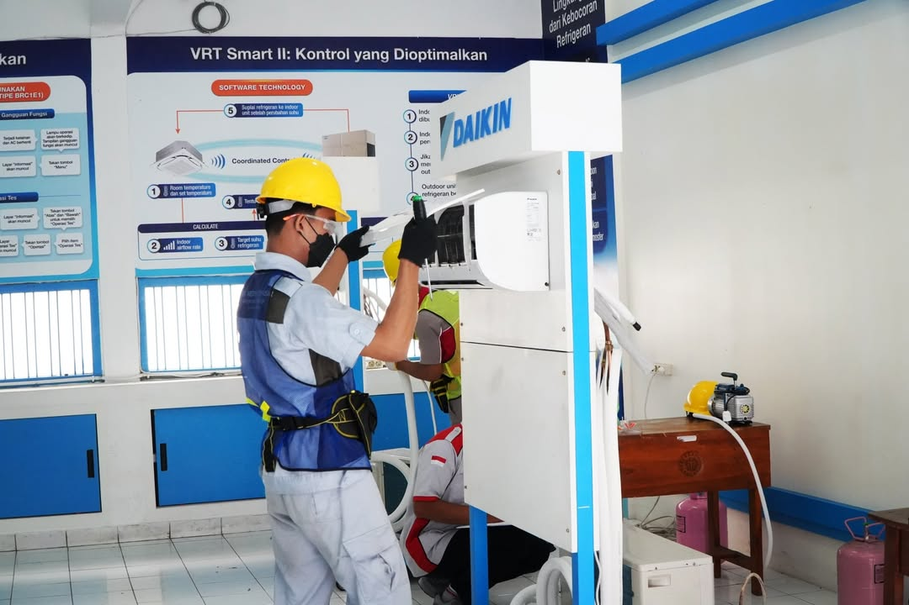
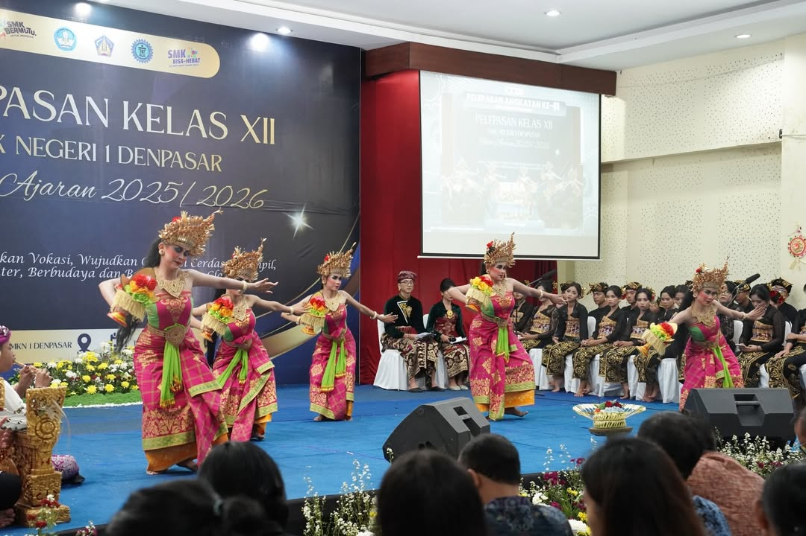
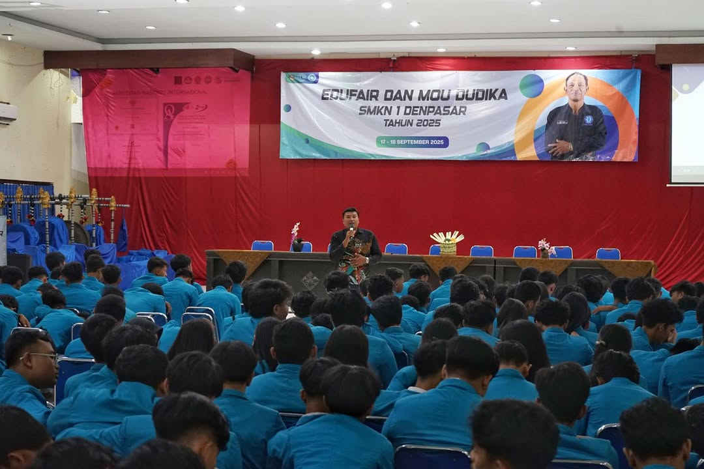

Kabar Terbaru dari SKENSA
Temukan berbagai cerita, pencapaian, dan kegiatan inspiratif yang mencerminkan semangat belajar, berkarya, dan berprestasi di SKENSA.

23 March 2025
Lingkungan Skensa
Siswa SKENSA Raih Prestasi dalam Lomba Kompetensi Siswa (LKS)
Siswa SMK Negeri 1 Denpasar kembali menunjukkan kompetensinya dalam ajang Lomba Kompetensi Siswa (LKS) melalui berbagai bidang keahlian dan berhasil mengharumkan nama sekolah.

31 March 2025
Aula Skensa
Pelepasan Siswa Kelas XII Tahun Ajaran 2025/2026
Momen penuh haru dan kebanggaan mewarnai acara pelepasan siswa kelas XII sebagai penutup perjalanan pendidikan dan awal langkah menuju masa depan yang lebih cerah.

08 Mey 2025
Aula Skensa
Edufair SKENSA: Membuka Wawasan Pendidikan dan Karier
Melalui kegiatan Edufair, siswa mendapatkan informasi mengenai berbagai perguruan tinggi, program studi, beasiswa, dan peluang karier untuk mempersiapkan masa depan mereka.

19 Mey 2025
Aula Skensa
Gelar Karya Siswa: Menampilkan Kreativitas dan Inovasi
Berbagai karya terbaik hasil pembelajaran siswa dipamerkan dalam acara Gelar Karya sebagai bentuk apresiasi terhadap kreativitas, inovasi, dan keterampilan yang telah dikembangkan.